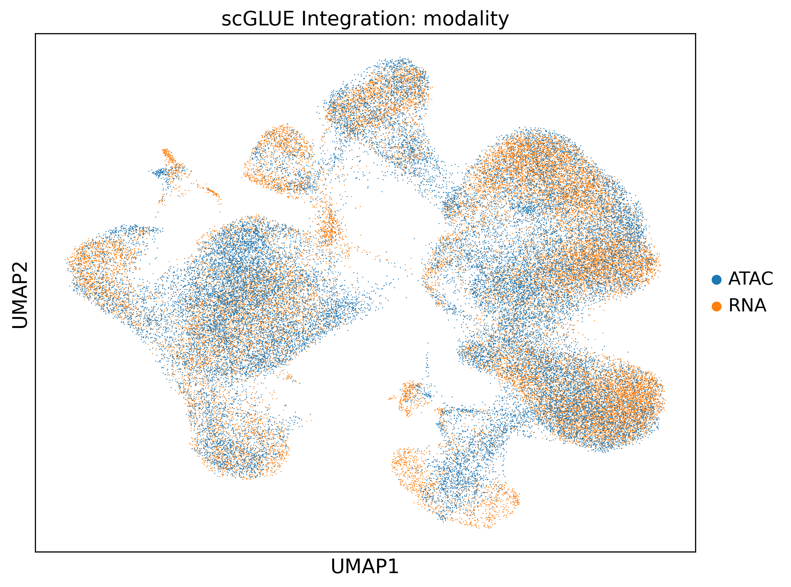
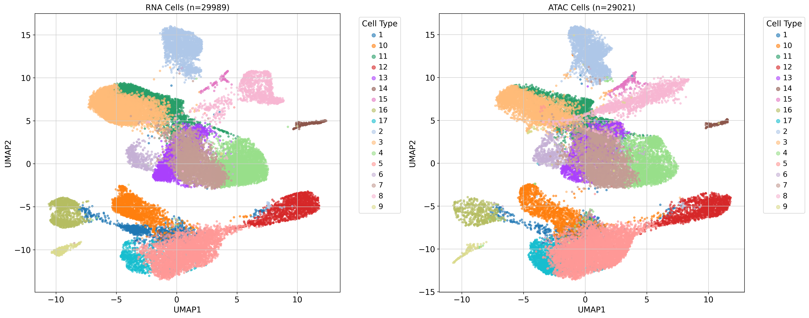
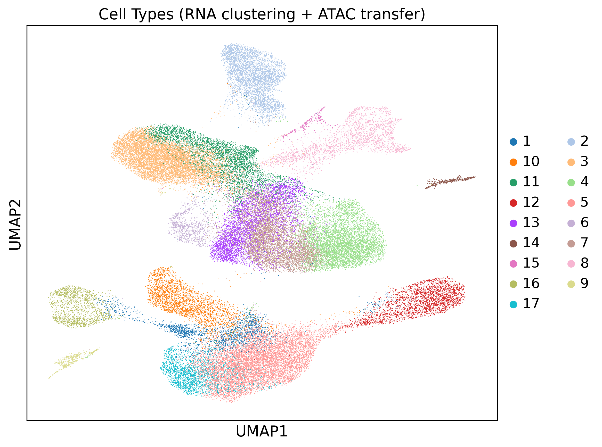
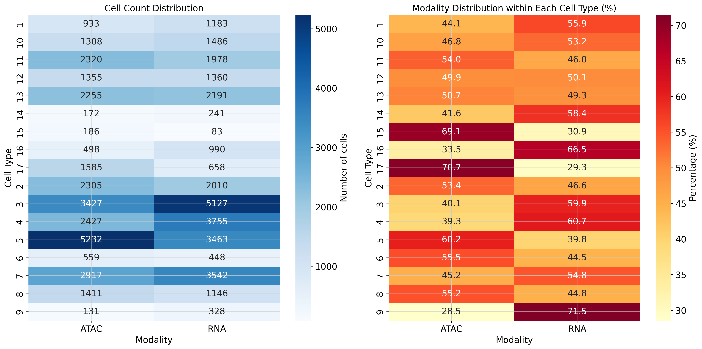

Multi-omics pipeline tutorial¶
The multi-omics branch takes paired or unpaired scRNA + scATAC data with a precomputed joint cell embedding (default scGLUE), computes cell-type labels on that embedding, and then produces the same single sample embedding (uns['X_DR_sample']) as the single-modality pipelines. Downstream analyses (distance, trajectory, DGE, clustering) reuse the shared modules.
Config-driven alternative
These steps call each function directly. To run the whole multi-omics branch from a single YAML instead, enable run_multiomics_pipeline in your config and run sampledisco -m complex --config config.yaml — see the Configuration guide.
Inputs¶
- Primary:
test_multiomics_integrated.h5ad— the pre-computed scGLUE-integrated object (carriesobsm['X_glue']andobsm['Z_clust']). The tutorial starts here. - Optional (from-scratch GLUE):
RNA.h5adandATAC.h5ad— modality-tagged cell-level counts; plus optional per-modality metadata CSVs or anadditional_hvg_file(a plain-text gene list forced into the HVG set). None of these are needed when phenotype columns already live in.obs.
Demo data
Download test_multiomics_integrated.h5ad from the demo dataset into a local data/ folder to run the tutorial as written. To follow the optional from-scratch GLUE step instead, grab the raw test_RNA.h5ad and test_ATAC.h5ad; their .obs already carry sample and sev.level, so no metadata files are required.
Output lands under output_dir/multiomics/.
1. Load the integrated data¶
The demo ships a pre-computed scGLUE integration, so the tutorial starts from it — load test_multiomics_integrated.h5ad and go straight to cell typing. It already carries the joint embedding (obsm['X_glue'], aliased to the sample-preserved Z_rmd) and the sample-removed obsm['Z_clust'], so no scGLUE training and no bedtools are needed. Since the scGLUE import is lazy (v0.1.3+), this pre-integrated path doesn't even require scGLUE to be installed — a plain pip install sampledisco runs it — you only need to install scGLUE yourself (see Installation) if you want to train GLUE from scratch.
Continue to joint cell typing. To build this object yourself from the raw RNA + ATAC counts, follow the optional section below instead.
Optional — integrate from scratch with GLUE¶
This trains scGLUE, so you must install scglue + the bedtools binary yourself first (see Installation); it is the slowest part of the pipeline. multiomics_preparation runs the full GLUE pipeline as toggleable sub-stages: scGLUE preprocessing (run_preprocessing), adversarial training (run_training), cell-union merge into a single integrated object (run_merge), per-modality QC + normalize (run_preprocess_per_modality), and optional visualization (run_visualization). Set run_second_glue_for_sample_removal=True to train scGLUE a second time and also obtain the sample-REMOVED cluster embedding (obsm['Z_clust']); the primary run's X_glue is aliased to the sample-PRESERVED obsm['Z_rmd'].
from sampledisco.preparation.multi_omics_glue import multiomics_preparation
multiomics_preparation(
rna_file="data/test_RNA.h5ad",
atac_file="data/test_ATAC.h5ad",
rna_sample_meta_file=None,
atac_sample_meta_file=None,
additional_hvg_file=None, # optional; not needed for the demo
output_dir="sampledisco_demo_output/multiomics",
# Process control flags
run_preprocessing=True,
run_training=True,
run_merge=True,
run_preprocess_per_modality=True,
run_visualization=True,
# GLUE preprocessing
ensembl_release=98,
species="homo_sapiens",
use_highly_variable=True,
n_top_genes=2000,
n_top_peaks=50000,
n_pca_comps=50,
n_lsi_comps=50,
gtf_by="gene_name",
flavor="seurat_v3",
generate_umap=False,
rna_sample_column="sample",
atac_sample_column="sample",
# GLUE training
consistency_threshold=0.05,
treat_sample_as_batch=False,
save_prefix="glue",
run_second_glue_for_sample_removal=True,
)
Writes → sampledisco_demo_output/multiomics/integration/glue/ (trained model + integrated objects), sampledisco_demo_output/multiomics/preprocess/adata_sample.h5ad (the cell-union object), and per-modality preprocess/adata_{rna,atac}_preprocessed.h5ad. The integrated cells carry obsm['Z_rmd'] (primary X_glue) and, with the second run enabled, obsm['Z_clust'].


When it finishes, load sampledisco_demo_output/multiomics/preprocess/adata_sample.h5ad as adata_integrated and continue — from here the steps are identical whether you loaded the pre-integrated file or built it yourself.
2. Joint cell typing¶
cell_types_multiomics clusters RNA cells with Leiden on the joint embedding, then transfers labels to ATAC via a Jaccard-weighted shared-nearest-neighbor (SNN) graph. use_rep should point at the sample-removed Z_clust; the wrapper resolves this automatically, and the default 'X_glue' is a fallback.
from sampledisco.preparation.multi_omics_cell_type_cpu import cell_types_multiomics
adata_integrated = cell_types_multiomics(
adata=adata_integrated, # from step 1 (loaded or freshly integrated)
modality_column="modality",
rna_modality_value="RNA",
atac_modality_value="ATAC",
cell_type_column="cell_type",
cluster_resolution=0.8,
use_rep="Z_clust",
num_PCs=50,
k_neighbors=15,
transfer_metric="cosine",
compute_umap=True,
save=True,
output_dir="sampledisco_demo_output/multiomics",
)
GPU
A GPU-accelerated equivalent is available as cell_types_multiomics_gpu in sampledisco.preparation.multi_omics_cell_type_gpu.
Writes → preprocess/adata_sample.h5ad with a unified cell_type column, plus UMAPs.


3. Sample embedding¶
The unified compute_sample_embedding handles RNA, ATAC, and multi-omics — there is no separate multi-omics entry point. For multi-omics, pass modality_col="modality"; the units of the resulting embedding are <sample>_RNA / <sample>_ATAC. The composition blocks are built on the sample-removed Z_clust, and the RMD displacement block on the sample-preserved GLUE joint embedding — which the integrated file stores under obsm['X_glue'] (there is no literal Z_rmd key). Point the RMD block at it explicitly with rmd_emb_key="X_glue": the key resolver falls back to cluster_emb_key (Z_clust) when it finds neither the passed rmd_emb_key nor a literal Z_rmd, so leaving it at None here would silently collapse the RMD block onto the same Z_clust used by the composition blocks.
from sampledisco.sample_embedding import compute_sample_embedding
adata_integrated = compute_sample_embedding(
adata_integrated,
output_dir="sampledisco_demo_output/multiomics",
use_gpu=False, # CPU default; set True for RAPIDS on Linux+NVIDIA (auto-falls back to CPU)
sample_col="sample",
celltype_col="cell_type",
cluster_emb_key="Z_clust",
rmd_emb_key="X_glue", # sample-preserved GLUE joint embedding (set explicitly; no literal Z_rmd here — see note above)
modality_col="modality",
batch_col=None,
medium_K=120,
fine_K=300,
rmd_dim_per_cluster=8,
rmd_weight=0.60,
pca_components=10,
batch_method="harmony",
save=True,
)
Writes → the single sample embedding into adata_integrated.uns['X_DR_sample'] (a pandas DataFrame, units × PCs) and persists the updated object under sampledisco_demo_output/multiomics/. The function returns the modified AnnData. This single key is consumed by every downstream module.
4. Embedding visualization¶
visualize_multimodal_embedding produces scatter plots of the sample embedding with optional coloring by metadata. Set both expression_key and proportion_key to 'X_DR_sample'.
from sampledisco.visualization.multi_omics_visualization import visualize_multimodal_embedding
visualize_multimodal_embedding(
adata=adata_integrated,
modality_col="modality",
color_col=None,
target_modality="ATAC",
expression_key="X_DR_sample",
proportion_key="X_DR_sample",
visualization_grouping_column=["sev.level"],
figsize=(20, 8),
point_size=60,
alpha=0.8,
colormap="viridis",
output_dir="sampledisco_demo_output/multiomics/visualization",
show_sample_names=False,
show_default=True,
)
Writes → per-grouping PNGs under sampledisco_demo_output/multiomics/visualization/. The severity-colored views of these embeddings are shown in the downstream CCA step (see Downstream analysis), so no separate embedding panel is reproduced here.
Once uns['X_DR_sample'] is populated, every remaining analysis — sample distance, CCA / TSCAN, trajectory DGE, sample clustering, proportion test, and RAISIN cluster DGE — is shared across modalities. Parameter selection is the alpha / block-weight autotune, enabled via multiomics_autotune_enable in the config-driven wrapper. Continue to the Downstream analysis tutorials.